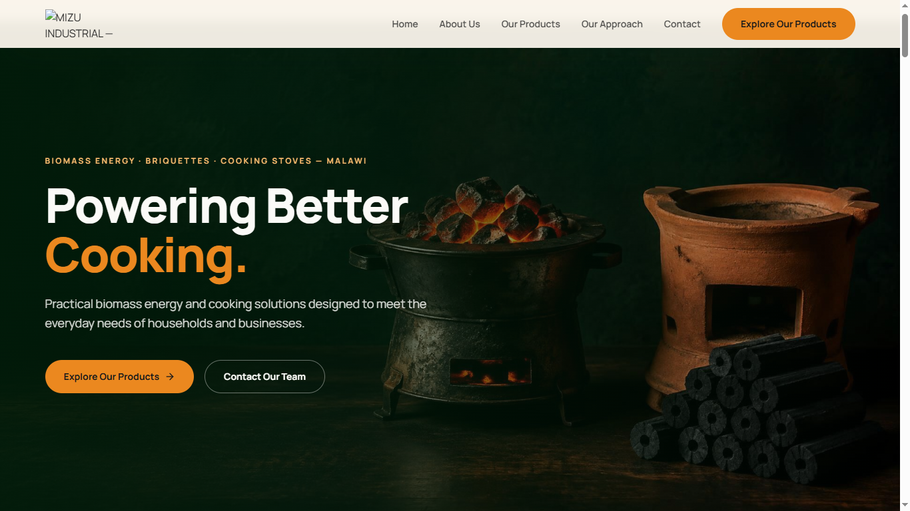
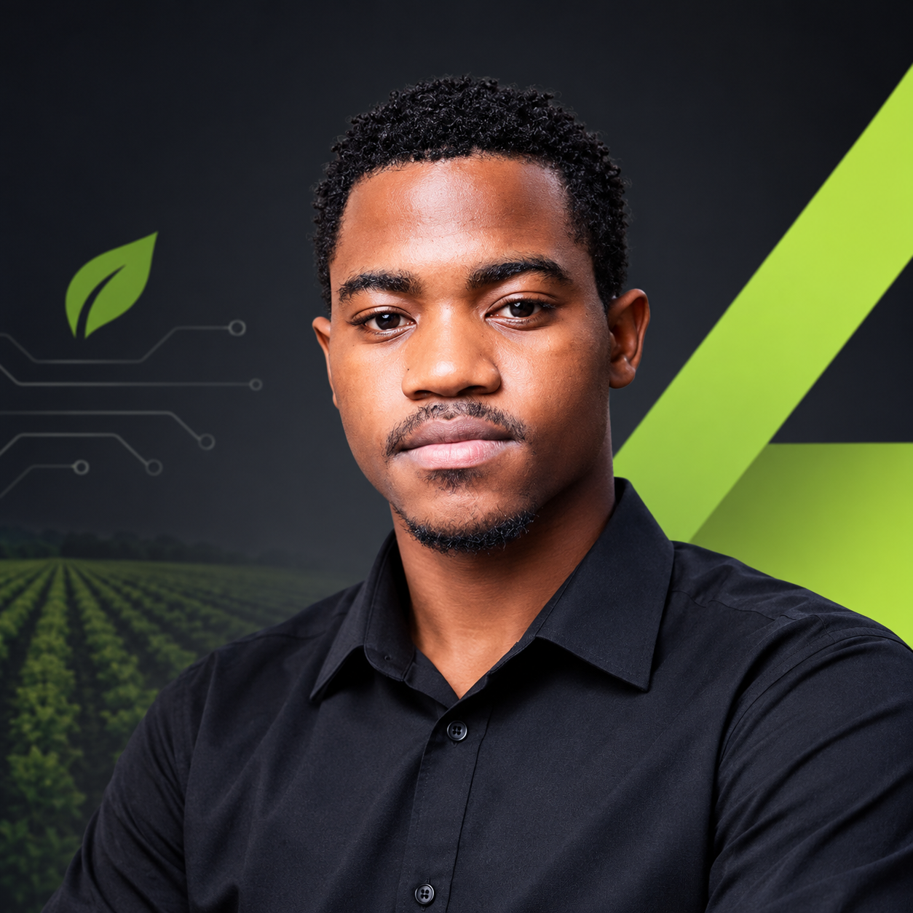

MIZU INDUSTRIAL
A responsive company website presenting biomass-energy products and making customer enquiries easy.
View live siteWEB DEVELOPMENT · AGRITECH
I build responsive websites and practical digital tools for agriculture. I’m a Computer Science undergraduate in Malawi, combining software development with an agriculture background to solve real-world problems.
Available for freelance projects and opportunities

ABOUT ME
My journey into technology began while studying agriculture. I became interested in how big data and technology could transform farming and improve decision-making, which inspired me to transition into Computer Science.
I’m now developing responsive web experiences and practical digital tools. My agritech work includes iNest Agro, an independent Malawian company behind MaizePlan and FarmMargin. I’m particularly interested in precision agriculture, agricultural data and intelligent systems for farming in Africa.
SELECTED WORK / 01–02
A selection of business websites and digital tools shaped around practical needs.

A maize planning tool for estimating plant population, seed requirements and fertiliser needs before planting.
Open toolA gross-margin tool for organising production costs, estimating revenue and reviewing possible farm enterprise margins.
Open toolPRODUCTS DEVELOPED UNDER INEST AGRO · MALAWI
CAPABILITIES / 03
My skills combine hands-on web development, agricultural knowledge and foundational IT support.
Building responsive websites and browser-based applications, translating ideas and designs into accessible interfaces and useful user experiences.
Bringing agricultural knowledge into digital product development, with an interest in practical tools that support farm planning, production and better business decisions.
Supporting everyday computing needs through foundational knowledge of computer systems, networking and practical troubleshooting.
Approaching projects with curiosity and a practical mindset, learning new tools, researching problems and working towards clear, useful outcomes.
Development and delivery tools used across my projects.
Currently learning — Python, with a growing interest in AI, data science and software development.
Long-term focus — Precision agriculture, agricultural data and intelligent digital tools for farming in Africa.
GET IN TOUCH
For website projects, agritech collaborations or professional opportunities, get in touch by email.
Email me